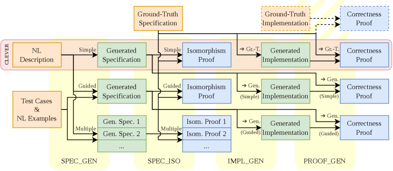
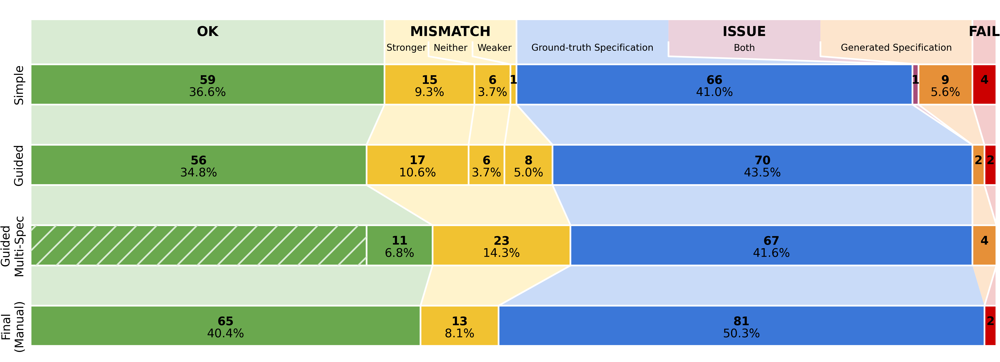
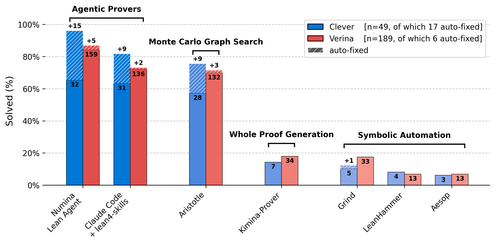

Uses agentic LLM provers to generate Lean 4 specifications, implementations and proofs for the CLEVER benchmark, auditing its reference specifications.
Abstract
Agentic systems have recently emerged as state-of-the-art approaches for automated theorem proving in formal mathematics. To assess how far these capabilities extend to program verification and how reliably existing benchmarks can measure them, we audit CLEVER, a Lean 4 benchmark for verifiable code generation, using three independent agentic stacks based on Claude Opus 4.6, GPT-5.4, and Kimi K2.5. Our audit finds arguably erroneous reference specifications in 80 of 161 entries, each accepted by the benchmark's authors, distills a taxonomy of benchmark errors, and exposes structural limitations of isomorphism-based scoring, whose signal breaks down when generated and reference specifications formalize different yet defensible readings. In the process, the stacks generate arguably valid specifications for up to 98.8% of entries, certify implementations against sound reference specifications for up to 92.3%, and reach up to 96.2% end-to-end success over entries with sound premises, suggesting that CLEVER no longer stresses modern agentic provers as much as its design intended. Looking ahead, we translate our findings into recommendations for future work, with our error analysis doubling as a repair list for CLEVER and a heuristic checklist for the next generation of benchmarks.
Problem
It is unclear how far agentic theorem provers extend to program verification, and whether Lean 4 verified-code-generation benchmarks like CLEVER measure that ability reliably. CLEVER scores specifications by proving them isomorphic to human-written reference specifications, which assumes those references are correct.
Approach
Three agentic stacks (Claude Opus 4.6, GPT-5.4, Kimi K2.5) were run pass@1 on all four CLEVER tasks: spec generation, spec isomorphism proof, implementation generation and correctness proof. Prompts became progressively more guided across runs. The agents flagged mismatches and bugs in their own outputs and in the ground-truth specs, and the authors reviewed the flagged cases manually. A preliminary comparison also covered other provers on CLEVER and Verina, including Aristotle, Kimina-Prover, Grind, LeanHammer, Aesop and Canonical.

Figure 1: Schematic overview of our experimental pipeline. The four generation and proof tasks are identified in yellow: Clever ’s original intended setup spans horizontally in red across the top row, while other pathways represent our custom variations of the setup. The dashed portion in the top-right corner is the preliminary experimentation setup of Appendix A .
Results
80 of 161 reference specifications were judged arguably erroneous, and the benchmark's authors accepted these reports. The errors were organized into a taxonomy (e.g., precedence bugs, conjunct used as guard, Nat truncation). The stacks produced arguably valid specs for up to 98.8% of entries, certified implementations for up to 92.3%, and reached up to 96.2% end-to-end success on entries with sound premises. These results indicate CLEVER is near saturation and that isomorphism-based scoring breaks down when specs formalize different defensible readings.

Figure 2: Distribution of output flags for spec_iso runs. The following color scheme will be used throughout the paper: green for ok entries, red for fail , yellow for mismatch , blue for issue in benchmark components, orange for those in generated components, purple for issues in both.

Figure 4: Overview of prover performance on the Clever and Verina benchmarks. Solid bars indicate the number of tests solved on the verified-correct portions of each dataset, while the patterned bar segments above show additional solved instances obtained after correcting erroneous benchmark entries. Numbers annotated with a ‘+’ denote the corresponding count of these additional solves.
Prover
Clever examples
Clever human_eval
Verina basic
Verina advanced
Numina Lean Agent
5 (+1)
27 (+14)
102 (+2)
57 (+3)
Claude Code + lean4-skills
5 (+1)
26 (+8)
96
40 (+2)
Aristotle
5
23 (+9)
89 (+1)
43 (+2)
Grind
2
3 (+1)
31
2
# entries
5 (+1)
27 (+16)
106 (+2)
77 (+4)
Prover performance on verified-correct portions of Clever and Verina (additional solves after fixes in parentheses)